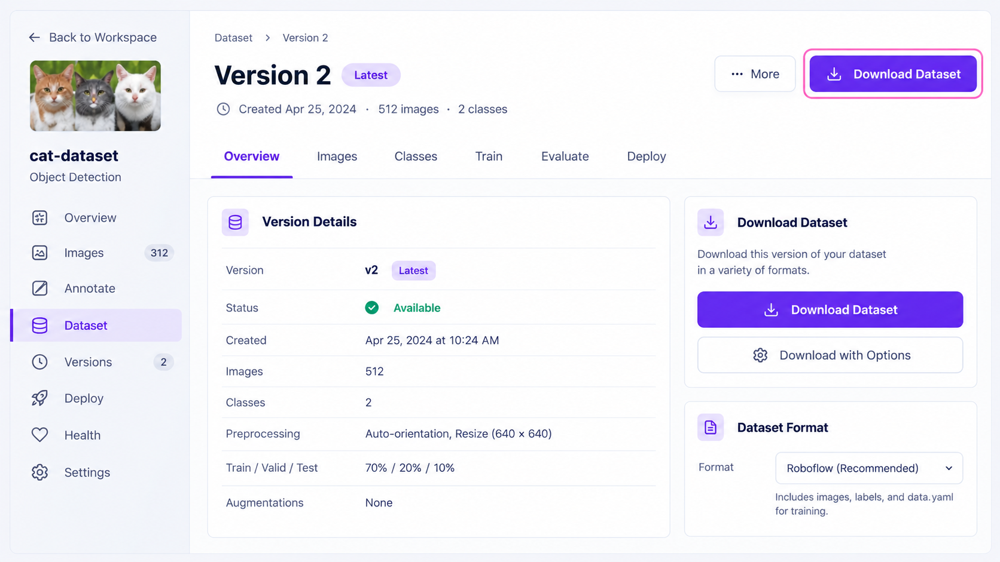
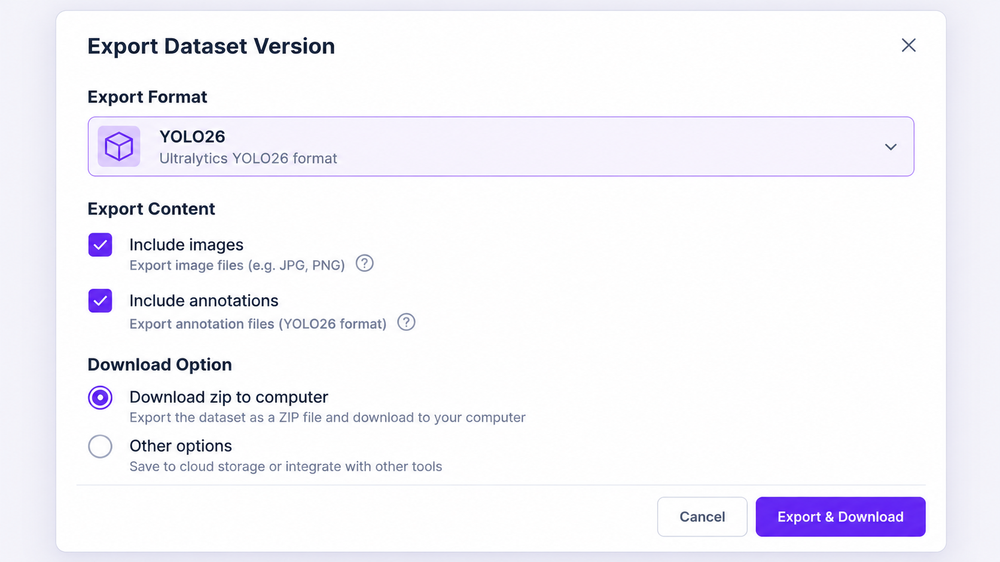
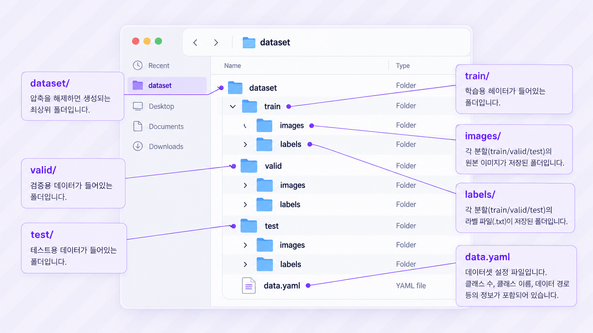
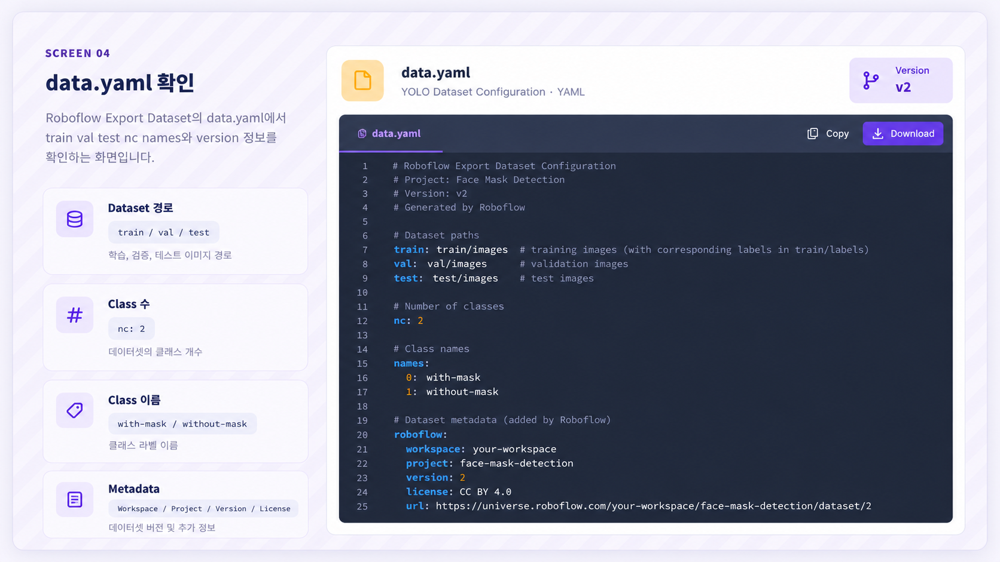

ROBOFLOW · COMPUTER VISION DATASET
Dataset Pipeline · Framework-ready File Export
Roboflow 07. Dataset Export
Download Dataset · YOLO Format · Images · Annotation Files
Roboflow 화면에서 관리하던 Image, Bounding Box, Class는 그대로는 Python Training Code가 읽을 수 없습니다. 생성한 Dataset Version에서 Download Dataset을 실행하고, Framework에 맞는 Format을 선택하여 data.yaml · images · labels 구조로 변환해야 합니다.
학습 목표
-
01
Dataset Version, Export, Model Training의 차이를 설명한다.
-
02
Download Dataset에서 Format과 Download Option을 선택하는 이유를 설명한다.
-
03
교안의 YOLO26과 Download zip to computer 흐름을 따라간다.
-
04
ZIP 압축 해제 후 Dataset Folder Tree를 읽는다.
-
05
images와 labels의 역할과 파일 대응 관계를 설명한다.
-
06
data.yaml의 train, val, test, nc, names를 해석한다.
-
07
Roboflow Metadata를 이용해 Dataset Version과 출처를 확인한다.
-
08
Export 후 YOLO Training 전에 확인할 구조와 오류를 점검한다.
교안 직접 흐름: Dataset Version → Download Dataset → YOLO26 → Download zip to computer → Continue → ZIP 압축 해제 → data.yaml → images / labels
01 · LESSON GOAL
Roboflow Dataset을 Training File로 변환하기
이번 단원의 결과는 새로운 Annotation이 아니라, 기존 Image와 Annotation을 YOLO가 읽을 수 있는 파일 구조로 만드는 것입니다.
Roboflow Version
- Roboflow 안에 Dataset 존재
- Image와 Annotation 존재
- 로컬 ZIP 없음
- data.yaml 없음
YOLO Dataset
- ZIP Dataset 존재
- data.yaml 존재
- images Folder 존재
- labels Folder 존재
Annotation Editor에서 만든 Bounding Box와 Class를 선택한 Framework가 읽을 수 있는 파일 규칙으로 바꾸는 과정입니다.
02 · PIPELINE POSITION
Roboflow 전체 Workflow에서의 위치
03 · CORE CONCEPTS
Dataset Export 핵심 용어
| 용어 | 의미 | 확인 질문 |
|---|---|---|
| Dataset Export | Version을 Framework용 파일 구조로 내보내는 과정 | Roboflow Dataset을 어떻게 외부에서 사용할까? |
| Download Dataset | Export 설정 화면을 여는 버튼 | 어디에서 Export를 시작할까? |
| Export Format | Annotation과 Folder를 표현하는 저장 규칙 | 어떤 Framework 형식을 사용할까? |
| YOLO26 | 교안 Download 화면에 선택된 Format | 교안에서는 무엇을 선택했는가? |
| Download zip to computer | Dataset을 ZIP으로 로컬에 받는 Option | 어떤 방식으로 파일을 받을까? |
| data.yaml | Dataset 경로와 Class 정보를 정의하는 설정 파일 | YOLO는 Dataset 위치를 어떻게 찾을까? |
| images | Model 입력 Image Folder | 학습 입력은 어디에 있는가? |
| labels | Object Detection Annotation `.txt` Folder | 학습 정답은 어디에 있는가? |
| nc | Number of Classes | Class는 몇 개인가? |
| names | Class 이름과 ID 순서 | 각 Class 번호는 무엇을 의미하는가? |
Dataset Export
=
Dataset Version
+
Export Format
+
Download Option
04 · VISUAL UNDERSTANDING
UI Dataset이 File Dataset으로 바뀌는 과정
Dataset Version
- Image
- Bounding Box
- Class
YOLO Dataset
dataset/
├─ train/
├─ valid/
├─ test/
└─ data.yaml- images
- labels
- data.yaml
labels/*.txt
nc / names
images/*
05 · SCREEN WALKTHROUGH
교안 화면 따라하기
각 화면에서 무엇을 선택하는가 → 왜 필요한가 → 어떤 파일이 만들어지는가 를 함께 확인합니다.

Version → Download Dataset
- 어디를 클릭?
- 생성된 Dataset Version의 Download Dataset
- 왜?
- Version을 외부 파일로 Export하기 위해
- 상태 변화
- Version 상세 화면 → Download 설정 Modal
- 다음
- Export Format 선택

YOLO26 + ZIP Download
- Format
- Image and Annotation Format → YOLO26
- Download Option
- Download zip to computer
- 완료 동작
- Continue
- 주의
- YOLO26은 교안 화면의 선택값

ZIP 압축 해제 → Folder Tree
- 최상위
- data.yaml
- Split
- train / valid / test
- 입력
- images
- 정답
- labels

data.yaml 확인
- Dataset 경로
- train / val / test
- Class 수
- nc: 2
- Class 이름
- with-mask / without-mask
- Metadata
- Workspace / Project / Version / License
Download Dataset, YOLO26, Download zip to computer, Continue, data.yaml, train·val·test, nc·names, images·labels는 교안에서 직접 확인되는 흐름입니다.
06 · EXPORT WORKFLOW
Dataset Export 조작 순서
- Export할 Version 선택 Version 번호와 설정을 확인합니다.
- Download Dataset 클릭 Export 설정 Modal을 엽니다.
- Image and Annotation Format 확인 사용할 Framework에 맞는 Dataset Format을 선택합니다.
- YOLO26 선택 교안 화면의 YOLO Export Format을 선택합니다.
- Download zip to computer 선택 Export 결과를 로컬 ZIP으로 받습니다.
- Continue Format과 Download Option을 확정합니다.
- ZIP Download Dataset 압축 파일을 로컬 컴퓨터에 저장합니다.
- ZIP 압축 해제 실제 Dataset Folder와 파일을 확인합니다.
- data.yaml 확인 경로, Class 수, Class 이름, Version Metadata를 검수합니다.
- images / labels 확인 Image와 Annotation 파일의 대응을 확인합니다.
- YOLO Training 준비 Dataset 구조 검수가 끝난 뒤 학습 환경에 연결합니다.
07 · CONCEPT COMPARISON
Version · Export · Training 구분
Export 대상
특정 시점의 Image, Annotation, Preprocessing, Augmentation 상태
파일 구조 생성
Version을 YOLO Folder와 설정 파일로 변환
Weight 학습
Export Dataset으로 Object Detection Model 학습
08 · EXPORT FORMAT
왜 Format을 선택하는가?
같은 Bounding Box와 Class라도 Framework마다 저장 방식과 파일 구조가 다를 수 있습니다.
YOLO26
- 교안 화면의 선택값
- YOLO 계열 Export Format
- Image별 Label File 구조
COCO
- 일반적으로 JSON Annotation
- 여러 Image 정보를 하나의 구조로 관리
- 교안의 선택 Format은 아님
Pascal VOC
- 일반적으로 XML Annotation
- Image 단위 Annotation 표현
- 교안의 선택 Format은 아님
교안의 YOLO26을 무조건 선택하는 것이 아니라, 실제 YOLO Library와 Code가 어떤 Dataset Format을 읽는지 확인해야 합니다.
09 · DOWNLOAD OPTION
ZIP Download와 Code Download 구분
Download zip to computer
Dataset 파일 전체를 ZIP으로 묶어 로컬 컴퓨터에 다운로드합니다.
Show download code
화면에는 표시되지만 교안은 Code Download의 사용법을 설명하지 않습니다.
10 · DATASET STATE CHANGE
Export 전후 Dataset 상태 변화
Roboflow Version
Dataset이 Roboflow 안에 존재
Export Settings
YOLO26과 ZIP 방식 선택
ZIP Download
로컬 압축 파일 생성
YOLO Dataset
data.yaml + images + labels
11 · EXPORTED FOLDER TREE
YOLO Dataset Folder 구조
dataset/
│
├─ train/
│ ├─ images/
│ │ ├─ image001.jpg
│ │ ├─ image002.jpg
│ │ └─ ...
│ │
│ └─ labels/
│ ├─ image001.txt
│ ├─ image002.txt
│ └─ ...
│
├─ valid/
│ ├─ images/
│ └─ labels/
│
├─ test/
│ ├─ images/
│ └─ labels/
│
└─ data.yaml
train/images
학습 Image
Model Weight 학습에 사용하는 입력
train/labels
학습 Annotation
Train Image와 대응하는 정답
valid
Validation
학습 중 일반화 상태 확인
test
Test
최종 성능 평가
data.yaml
Dataset 설정
경로·Class·Version Metadata
12 · DATA.YAML
YOLO Dataset 설정 파일 읽기
train: ../train/images
val: ../valid/images
test: ../test/images
nc: 2
names: ['with-mask', 'without-mask']
roboflow:
workspace: objectdetect-huyv4
project: find-mask-pkqpq
version: 1
license: CC BY 4.0
url: ...
train
Training 경로
Model Weight 학습용 Image Folder
val
Validation 경로
학습 중 검증용 Image Folder
test
Test 경로
최종 평가용 Image Folder
nc
Class 수
Number of Classes
names
Class 이름
Class ID와 이름의 순서
version
Version Metadata
Export한 Roboflow Version
`val`은 YAML Key이고, `valid`는 교안 Dataset의 실제 Folder 이름입니다.
`../train/images`의 `..`는 일반적인 상대 경로에서 상위 Folder를 뜻합니다. 실제 경로 기준은 사용하는 YOLO Library와 실행 위치를 확인해야 합니다.
13 · IMAGES / LABELS
Model 입력과 Object Detection 정답
images
Model이 읽는 Image 파일
labels
Bounding Box와 Class 정답
Image와 Label Pair
images/image001.jpg
↕
labels/image001.txt
images/person_a.png
↕
labels/person_a.txt
SUPPLEMENT · 일반적인 YOLO 파일명 대응 규칙
교안은 images Folder에 원본 Image가 있다고 표현하지만, 이전 Version 단계에서는 Preprocessing을 적용합니다. Export Image와 Upload 원본의 정확한 관계는 교안에서 별도로 설명하지 않습니다.
14 · YOLO LABEL FORMAT
Annotation `.txt` 내부 구조
SUPPLEMENT · 교안은 `.txt` 생성까지만 직접 설명
class_id x_center y_center width height
0 0.512 0.438 0.214 0.376
1 0.270 0.510 0.180 0.420
class_id
객체 Class 번호
x_center
Box 중심 X 위치
y_center
Box 중심 Y 위치
width
Box 가로 크기
height
Box 세로 크기
Label 파일의 Class ID와 data.yaml의 names 순서가 연결될 수 있으므로, Export 후 수동 변경할 때 주의해야 합니다.
15 · TRAIN / VALID / TEST
Dataset Split의 역할
Model Weight 학습
Image와 Label을 반복해서 보며 Object Detection Pattern을 학습합니다.
학습 중 검증
Train Data에만 지나치게 맞춰지는지와 일반화 상태를 확인합니다.
최종 평가
학습과 설정 조정이 끝난 뒤 최종 성능을 평가합니다.
Split 안에서 Image와 Label을 함께 유지
train/images/image001.jpg
↕
train/labels/image001.txt
train/images/image001.jpg
↕
valid/labels/image001.txt
data.yaml에는 train, val, test 경로가 보이지만, 각 Split 비율을 어떤 기준으로 결정했는지는 교안에 설명되어 있지 않습니다.
16 · EXPORT VALIDATION
YOLO Training 전 Dataset 검수
경로·Class·Image·Label 구조 검수가 끝난 상태
17 · COMMON MISTAKES
초보자가 자주 하는 실수
잘못된 Dataset Version Export
Version 번호, 생성 시각, Annotation 수정 상태를 확인합니다.
Download Dataset과 Train Model 혼동
Download는 파일 준비, Train은 Model Weight 학습입니다.
YOLO26을 모든 프로젝트의 정답으로 생각
실제 Training Library가 지원하는 Format을 확인합니다.
Download Option을 다르게 선택
교안의 실습 경로는 Download zip to computer입니다.
Continue를 누르지 않음
Format과 Download Option을 선택한 뒤 Continue까지 진행합니다.
ZIP을 압축 해제하지 않음
data.yaml과 실제 Folder 구조를 확인하려면 압축을 해제해야 합니다.
data.yaml만 별도 위치로 이동
상대 경로가 기존 Dataset Folder 구조와 맞지 않을 수 있습니다.
Folder 이름을 변경하고 YAML은 그대로 둠
실제 Folder 이름과 YAML 경로를 함께 수정해야 합니다.
Train / Valid / Test 역할 혼동
학습, 학습 중 검증, 최종 평가 역할을 구분합니다.
images와 labels를 같은 Folder에 섞음
Model 입력과 Ground Truth는 역할별 Folder로 구분합니다.
Image와 Label 파일명 불일치
같은 Sample은 일반적으로 같은 기본 파일명을 사용합니다.
nc와 names 개수 불일치
Class 수와 Class 이름 목록 길이를 일치시킵니다.
names 순서를 임의로 변경
Class ID 해석이 달라질 수 있으므로 주의합니다.
Export가 잘못된 Annotation을 수정한다고 생각
잘못된 Bounding Box와 Class도 그대로 Export될 수 있습니다.
객체 일부만 Annotation한 상태로 Export
누락된 객체는 Export 과정에서 자동 생성되지 않습니다.
Annotation이 없는 Image를 무조건 오류로 판단
Negative Image인지 Annotation 누락인지 Project Policy를 확인합니다.
License Metadata를 무시
Dataset 사용·공유 전 License 조건을 별도로 확인합니다.
Export 완료를 Model 학습 완료로 생각
Export 결과는 Dataset이며 Trained Model은 아닙니다.
18 · ERROR / STATUS READING
Export 후 흔한 오류 상태 읽기
교안에는 Export나 Training 과정의 실제 Error Popup 사례가 없습니다. 아래 표는 일반적인 Dataset 구조 오류를 이해하기 위한 보충 진단 기준입니다.
| 증상 | 가능한 원인 | 먼저 확인할 내용 |
|---|---|---|
| data.yaml을 찾지 못함 | 압축 미해제·잘못된 실행 경로 | Dataset Root와 YAML 위치 |
| Training Images를 찾지 못함 | train 경로 불일치 | YAML 경로와 train/images |
| Validation Images를 찾지 못함 | val Key·valid Folder 혼동 | val: ../valid/images |
| Label File을 찾지 못함 | labels Folder·파일명 문제 | Image와 Label 기본 이름 |
| Class Index 범위 오류 | Label Class ID가 nc 이상 | nc·names·Label 첫 값 |
| YAML Syntax Error | 들여쓰기·콜론·괄호 오류 | 수동 수정 여부 |
| Image와 Label 수 차이 | Negative Image·누락·삭제 | Project Annotation Policy |
19 · PRACTICAL CONNECTION
실무 Dataset Export 관리
SUPPLEMENT · 실무 운영 예시
Version을 포함한 Folder Naming
downloads/
└─ find-mask_v1_yolo_original.zip
datasets/
├─ find-mask_v1_yolo/
├─ find-mask_v2_yolo/
└─ find-mask_v3_yolo/Export Manifest 예시
- Project
- find-mask
- Roboflow Version
- 1
- Export Format
- YOLO26
- Download
- ZIP to computer
- Classes
- 0 with-mask · 1 without-mask
- Manual Changes
- none
Dataset Version과 Model Experiment 연결
20 · INTERVIEW / REVIEW
면접 포인트
Q01. Dataset Export란 무엇입니까?
Roboflow Dataset Version을 YOLO 같은 외부 Framework가 읽을 수 있는 Folder와 파일 구조로 변환하는 과정입니다.
Q02. Export는 어디에서 시작합니까?
생성된 Dataset Version의 상세 화면에서 Download Dataset을 클릭합니다.
Q03. 교안에서 선택한 Format은 무엇입니까?
YOLO26입니다. 이는 교안 화면의 선택값입니다.
Q04. 교안의 Download Option은 무엇입니까?
Download zip to computer입니다.
Q05. Format과 Download Option 선택 후 무엇을 클릭합니까?
Continue를 클릭합니다.
Q06. Version과 Export의 차이는 무엇입니까?
Version은 특정 Dataset 상태와 설정을 고정하고, Export는 그 Version을 Framework용 파일 구조로 변환합니다.
Q07. Export와 Model Training은 같은 단계입니까?
아닙니다. Export는 학습 데이터를 준비하고, Training은 그 데이터로 Model Weight를 학습합니다.
Q08. data.yaml은 무엇입니까?
Train·Validation·Test 경로, Class 수와 Class 이름, Dataset Metadata를 정의하는 설정 파일입니다.
Q09. 교안의 Train 경로는 무엇입니까?
../train/images입니다.
Q10. 교안의 Validation 경로는 무엇입니까?
../valid/images입니다.
Q11. val과 valid의 차이는 무엇입니까?
val은 data.yaml Key이고, valid는 실제 Folder 이름입니다.
Q12. nc는 무엇입니까?
Number of Classes, 즉 Dataset의 Class 수입니다.
Q13. names는 무엇입니까?
Class 이름과 Class ID의 순서를 정의하는 목록입니다.
Q14. 교안의 Class는 무엇입니까?
with-mask와 without-mask 두 개입니다.
Q15. images Folder에는 무엇이 저장됩니까?
Model 입력으로 사용할 Image가 저장됩니다.
Q16. labels Folder에는 무엇이 저장됩니까?
YOLO Object Detection Annotation `.txt` 파일이 저장됩니다.
Q17. 일반적인 YOLO Label 한 줄은 어떤 구조입니까?
class_id, x_center, y_center, width, height 구조입니다. 이는 일반적인 YOLO Format 보충 설명입니다.
Q18. Image와 Label은 어떻게 연결됩니까?
일반적으로 같은 기본 파일명을 사용해 연결합니다.
Q19. Train / Valid / Test의 역할은 무엇입니까?
Train은 Model 학습, Valid는 학습 중 검증, Test는 최종 평가에 사용합니다.
Q20. roboflow.version은 무엇입니까?
어떤 Dataset Version에서 Export했는지 나타내는 Metadata입니다.
Q21. data.yaml만 이동하면 왜 문제가 될 수 있습니까?
상대 경로가 기존 Folder 구조를 기준으로 작성되어 있어 Image Folder를 찾지 못할 수 있기 때문입니다.
Q22. Export 전에 확인할 품질 문제는 무엇입니까?
Class 이름 불일치, Bounding Box 범위 오류, 객체 누락, Annotation 누락 등을 확인합니다.
Q23. Export 후 확인할 구조 문제는 무엇입니까?
Folder 구조, YAML 경로, nc와 names, Image·Label 파일 대응을 확인합니다.
22 · SOURCE GUIDE
교안 원문과 보충 내용 구분
교안 직접 내용
- Dataset Version 상세 화면
- Download Dataset 버튼
- Image and Annotation Format
- YOLO26 선택
- Download zip to computer
- Show download code Option 표시
- Continue
- ZIP 압축 해제
- data.yaml 생성
- train / val / test 경로
- nc: 2
- with-mask / without-mask
- Roboflow Metadata
- images / labels
- labels의 YOLO `.txt`
이해·실무 보충
- COCO / Pascal VOC 비교
- Image·Label 파일명 대응
- YOLO Label 내부 숫자 구조
- 정규화 좌표 개념
- Negative Image 구분
- Export ZIP 원본 보관
- Export Manifest
- 자동 Validation Script
- Dataset Version과 Model Experiment 연결
YOLO26의 세부 규격, Label `.txt` 내부 공식, Train / Valid / Test 비율, Negative Image 처리, Export Image와 Upload 원본의 정확한 관계, License의 세부 사용 조건은 교안에 자세히 설명되어 있지 않습니다.